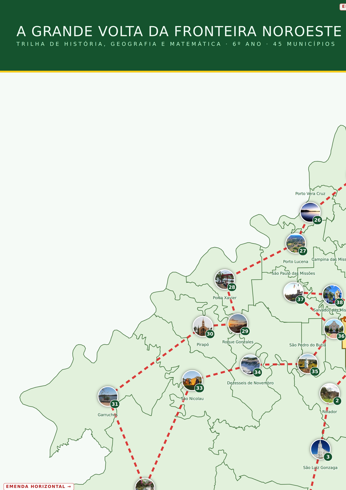
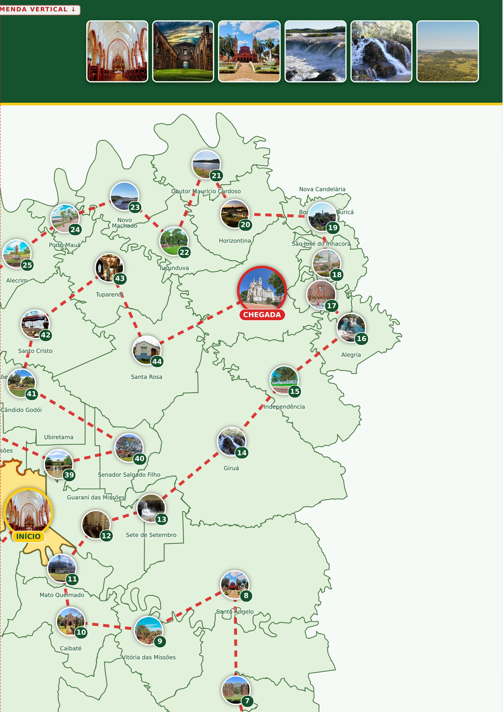
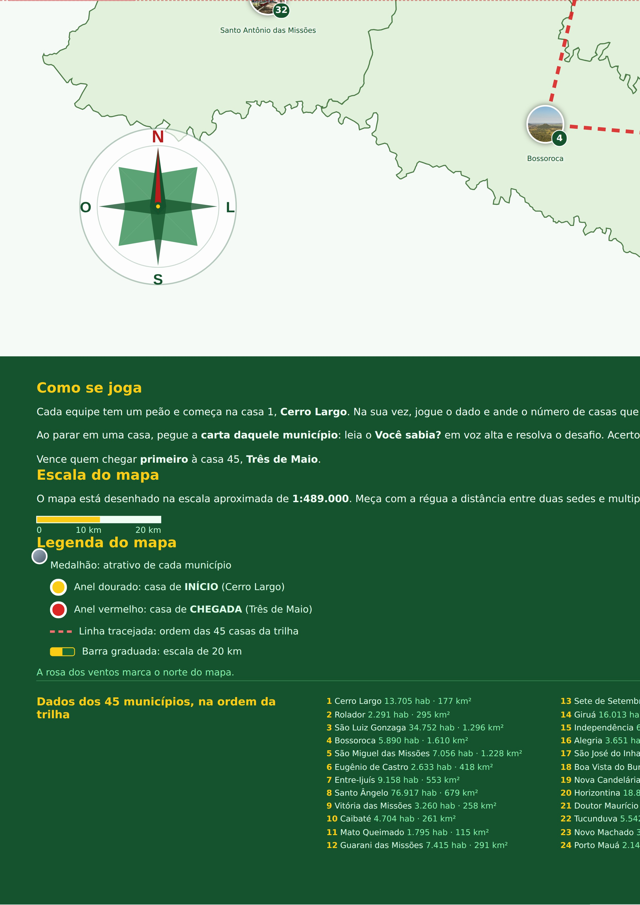
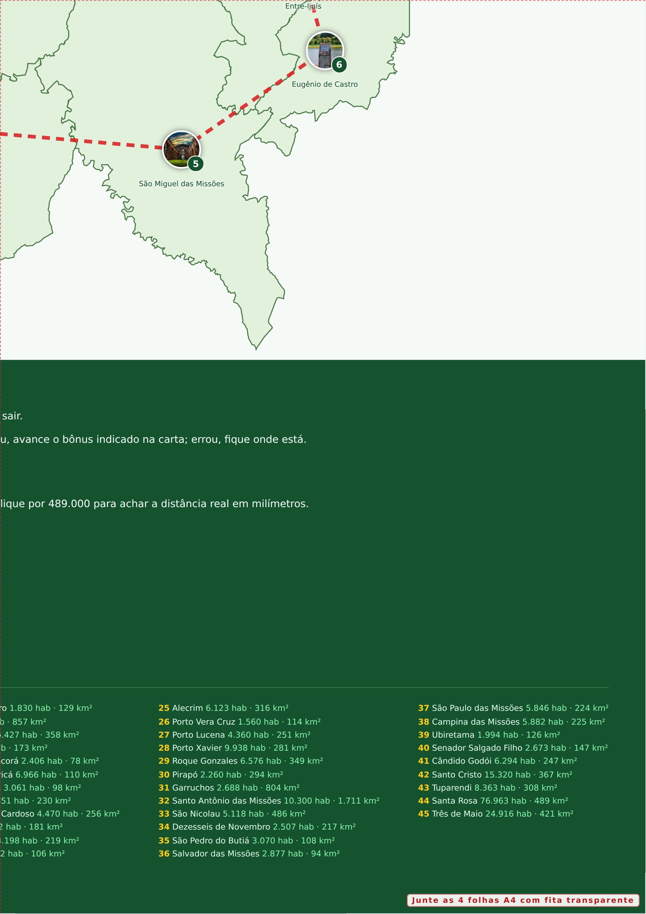

Laboratório de Matemática · 6º ano · Geografia e Matemática · 13 folhas A4 no total
4 folhas A4 que formam um tabuleiro de 42 × 59 cm. Imprima em A4, margens nenhuma, com gráficos de plano de fundo ligados. Junte pelas linhas vermelhas tracejadas, colando fita transparente pela frente.




45 cartas, uma para cada casa da trilha, em 5 folhas A4. Cada carta traz um Você sabia? com um fato histórico ou cultural do município e um Desafio de cálculo com os dados dele. As cartas estão encostadas umas às outras para facilitar o recorte em linha reta.
Uma folha A4 com os 4 peões das equipes e um dado de papel para montar. Dobre os peões ao meio pela linha pontilhada para que fiquem em pé.
Recorte os quatro peões pela borda e dobre ao meio pela linha pontilhada. De pé, eles ficam como uma barraca e o número aparece dos dois lados.
Recorte o molde pela linha cheia, dobre nas linhas pontilhadas e cole as abas. Se a turma já tiver um dado de seis faces, pode usar o dado normal.
Sugestão: imprima esta folha em papel mais grosso (120 g ou mais) para o dado ficar firme.
Uma folha A4 para a turma acompanhar as rodadas, o dado, a casa onde parou e o resultado de cada desafio.
| Rodada | Equipe | Dado | Casa onde parou | Acertou o desafio? | Bônus | Casa final |
|---|---|---|---|---|---|---|
Duas folhas A4 com o objetivo, a montagem, as regras completas, as habilidades da BNCC, o gabarito das 45 cartas e sugestões de adaptação.
Manual do professor · trilha de Geografia e Matemática · 6º ano
Um jogo de trilha para imprimir em que as equipes percorrem os 45 municípios da Fronteira Noroeste do Rio Grande do Sul, do início em Cerro Largo até a chegada em Três de Maio. Cada casa é um município, com a foto do atrativo, a população e a área. Ao parar em uma casa, a equipe descobre um fato histórico ou cultural daquele município e resolve um cálculo com os dados dele. Vence quem chegar primeiro ao fim da trilha.
| Tabuleiro | 4 folhas A4 que formam um tabuleiro de 42 × 59 cm |
| Baralho | 45 cartas, uma para cada casa, em 5 folhas A4 |
| Peões e dado | 4 peões e um dado de papel para montar, em 1 folha A4 |
| Registro | 1 folha A4 para acompanhar a partida |
Uma partida completa leva de 30 a 40 minutos. Para uma aula de 50 minutos, use o baralho inteiro e peça que cada equipe anote as rodadas na folha de registro. Se quiser uma versão mais curta, combine que a corrida termina na casa 25 ou jogue apenas com as cartas das casas múltiplas de três.
| EF06GE01 | Comparar as paisagens e os usos dos lugares de vivência |
| EF06GE08 | Usar as escalas gráfica e numérica para medir distâncias no mapa |
| EF06MA01 | Comparar, ordenar, ler e escrever números naturais e decimais |
| EF06MA13 | Resolver e elaborar problemas com porcentagem |
| EF06MA24 | Resolver problemas com grandezas: comprimento e área |
| Casa | Município | Resposta | Casa | Município | Resposta | Casa | Município | Resposta |
|---|---|---|---|---|---|---|---|---|
| 01 | Cerro Largo | a) 13.308 pessoas | 16 | Campina das Missões | a) R$ 34.600 | 31 | Giruá | b) 15.292 pessoas |
| 02 | Ubiretama | c) 20% | 17 | São Paulo das Missões | a) 2.923 habitantes | 32 | Senador Salgado Filho | b) 16% |
| 03 | Guarani das Missões | b) 6.177 habitantes | 18 | Porto Lucena | a) 63 km² | 33 | Sete de Setembro | c) 1.684 habitantes |
| 04 | Mato Queimado | b) R$ 34.300 | 19 | Porto Vera Cruz | a) 1.443 pessoas | 34 | Santa Rosa | a) R$ 58.900 |
| 05 | Caibaté | b) 2.352 habitantes | 20 | Alecrim | a) 38% | 35 | Tuparendi | c) 4.182 habitantes |
| 06 | Vitória das Missões | b) 64 km² | 21 | Porto Mauá | c) 1.774 habitantes | 36 | Santo Cristo | b) 92 km² |
| 07 | Santo Ângelo | c) 74.686 pessoas | 22 | Novo Machado | c) R$ 44.100 | 37 | Cândido Godói | c) 6.111 pessoas |
| 08 | Entre-Ijuís | b) 23% | 23 | Tucunduva | a) 2.771 habitantes | 38 | Roque Gonzales | c) 50% |
| 09 | Eugênio de Castro | c) 1.664 habitantes | 24 | Horizontina | c) 58 km² | 39 | Pirapó | b) 323 habitantes |
| 10 | São Miguel das Missões | c) R$ 73.300 | 25 | Doutor Maurício Cardoso | b) 4.305 pessoas | 40 | Porto Xavier | a) R$ 23.200 |
| 11 | Bossoroca | b) 2.945 habitantes | 26 | Nova Candelária | a) 21% | 41 | Dezesseis de Novembro | b) 1.254 habitantes |
| 12 | São Luiz Gonzaga | c) 324 km² | 27 | Boa Vista do Buricá | b) 5.733 habitantes | 42 | São Nicolau | b) 122 km² |
| 13 | Rolador | b) 2.147 pessoas | 28 | São José do Inhacorá | a) R$ 89.000 | 43 | Garruchos | b) 2.446 pessoas |
| 14 | São Pedro do Butiá | c) 18% | 29 | Alegria | c) 1.826 habitantes | 44 | Santo Antônio das Missões | a) 50% |
| 15 | Salvador das Missões | a) 328 habitantes | 30 | Independência | b) 90 km² | 45 | Três de Maio | c) 14.401 habitantes |
População e área: Censo 2022 e malhas territoriais do IBGE. Vegetação nativa, saneamento, alfabetização e PIB per capita: indicadores municipais do IBGE Cidades. Os contornos do mapa vêm das malhas oficiais do IBGE, desenhados na escala de 1:489.000. Os fatos históricos foram resumidos a partir das fichas do Super Trunfo Matemático do próprio laboratório.
Laboratório de Matemática · Mateus Goldschmidt & Lavínia M. Ferreira